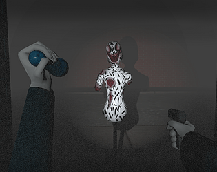
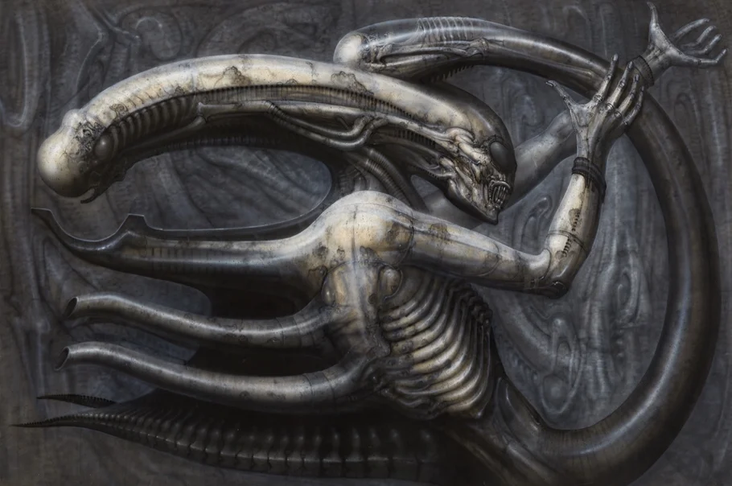
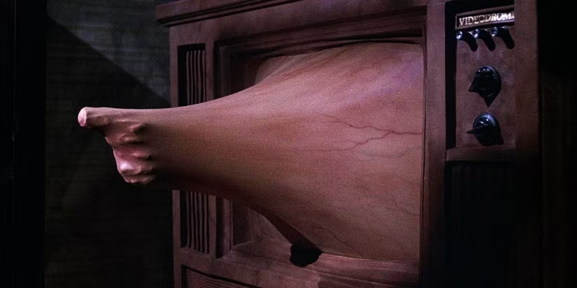
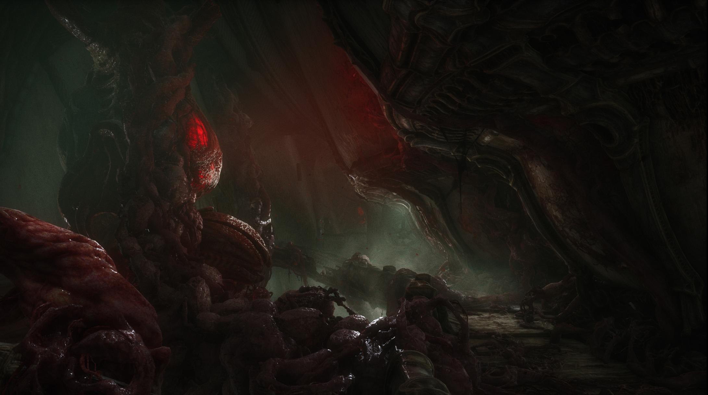
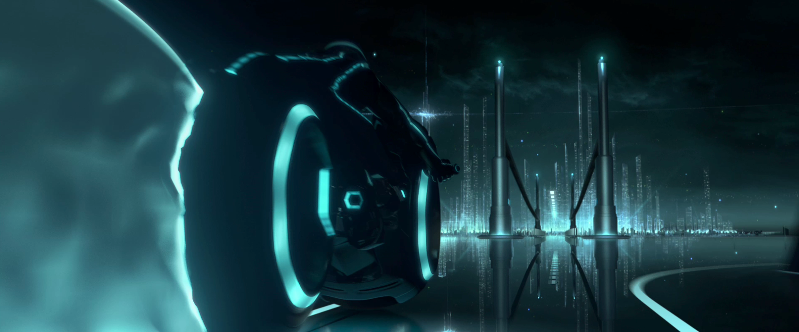
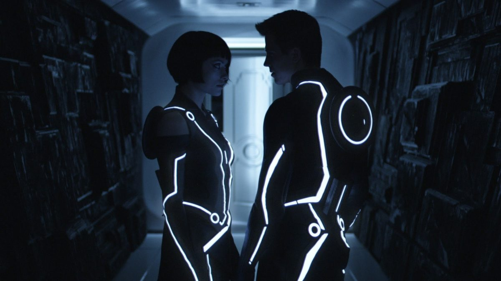
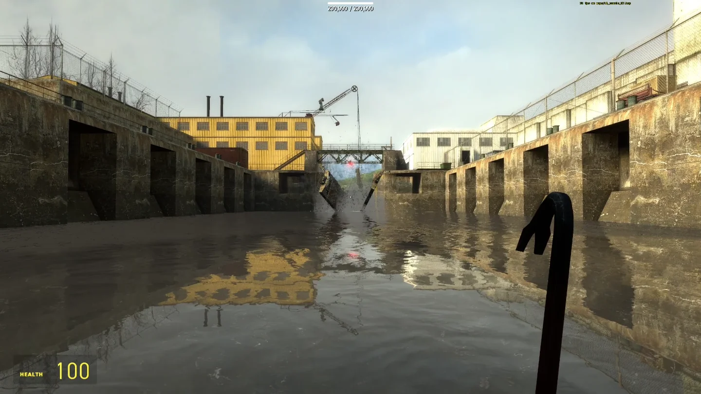
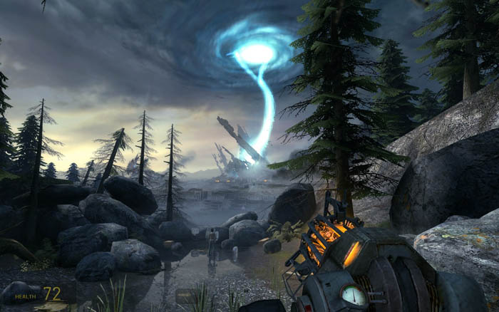
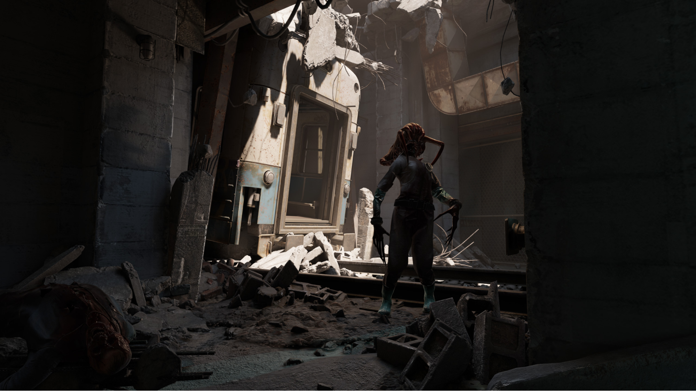
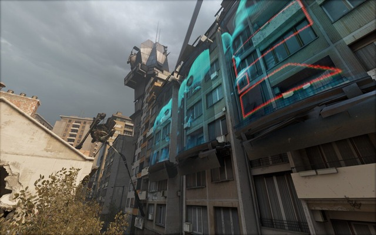

I am a jack of all trades who can code, make music, and draw. I also like making games in my free time for fun.

-Blender
-Krita
-Davinci Resolve
-FL Studio
-Unity
-Godot


-Python
-C++
-C#
-GDScript


He has a strangely Daoist philosophy of rolling with the punches when you make a mistake, encouraging you to keep going. It is even more inspiring when you learn that he used to be a drill instructor, and he swore that he never wanted to scream again.
“I have no desire to become any better of a guitar player. I'm not into musicianship at all. I don't have any respect for it; I just hate it. Learning how to read music or understanding arpeggios and Dorian modes and all that stuff is just a waste of time. It gets in the way of originality.” This quote is inspirational to me because he often came up with the sound of the music first without caring about the lyrics, and then he added nonsense lyrics on top of his melodies. Despite all that, people consider him a musical genius. It proves to me that you don’t need to go down the conventional path for learning or exhibiting skills in order to have your art appreciated.
“Piracy is almost always a service problem and not a pricing problem.” He is the founder of my favorite video game/hardware company: Valve. He focuses on being pro-consumer and building innovative, high-quality games/hardware, even if they take forever to make. This quote shows how his way of thinking is extremely countercultural to the philosophy of so many other CEOs, who choose not to understand their fans or fanbase.
Similar to Cyberpunk, it’s a genre of sci-fi, but instead of mechanical and electronic technology, it features biological technology. I find that there’s a strange beauty in the weird and grotesque imagery in this genre of media. There are some notable examples which I consider to be biopunk. H.R. Giger worked on many biomechanical artworks which were often sexual in nature. His work intrigued the crew on Alien, who hired him to work on the design for the Xenomorphs and face huggers. David Cronenberg is known for directing movies with grotesque imagery, like “Existenz”, “The Fly”, and “Videodrome”. There is also the video game “Scorn,” which is not very good in terms of gameplay, but it does have excellent art and atmosphere inspired by H.R. Giger. I want to note that all these pieces of media do not solely exist for shock value; Cronenberg used Videodrome to criticize violence in television, and Alien was a subversion of horror movies during a time that sexualized women. I believe that they create very unique worlds that otherwise are not very common.



This series of movies is known for pushing the limits of graphics technology and having cool music while doing it; they had influential electronic musicians work on soundtracks, like Daft Punk and Nine Inch Nails. I find that the monochromatic color scheme is very beautiful and looks extremely unique.


This is my favorite video game series, which has changed the way we tell stories and the way we interact with games. Half-Life 2 especially blew people’s minds in 2004 for its realistic graphics. I find it interesting how Half-Life 2 and onward have Soviet-style architecture combined with alien architecture.



